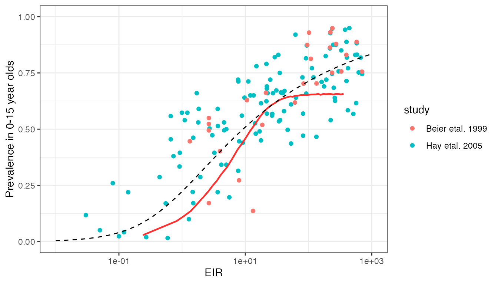

vignettes/calibration_prev_inc.Rmd
calibration_prev_inc.RmdThis report aims to:
Our first dataset comes from an alalysis by Hay et al. (2005) looking into the impact of urbanisation on malaria transmission in Africa. We will merge this with a second dataset on EIR vs. prevalence relationships by Beier et al. (1999) - see here for further information on both these datasets.
# take a quick look at Hay dataset (Beier is same format)
head(EIR_prev_hay2005)## # A tibble: 6 × 2
## annual_EIR prevalence
## <dbl> <dbl>
## 1 4.6 0.53
## 2 0.14 0.22
## 3 0.55 0.17
## 4 0 0.113
## 5 263. 0.626
## 6 224. 0.54
# combine datasets
EIR_prev_combined <- rbind(cbind(EIR_prev_hay2005, study = "Hay etal. 2005"),
cbind(EIR_prev_beier1999, study = "Beier etal. 1999"))We will compare this against model output produced by taking a range of mosquito relative population densities. Measured values include the annualised EIR over the whole population, and the prevalence by microscopy (acute + chronic) in children less than 15 years of age. For each simulation, model output is run for 20 years and values are taken as the average over the final 10 years.
# load precomputed model output
# code to produce this output: R_ignore/calibration/calibration_prev_inc1.R
df_model <- readRDS("../inst/extdata/calibration_prev_inc1.rds")This model prediction is shown below in red against the raw data:

This model prediction is reasonable in terms of the general trend, and is in the correct ball park in terms of values. However, clearly we predict far more curvature in the EIR vs. prevalence relationship than is present in the data.
Smith et al. (2005) performed an interesting analysis of the Hay et al. (2005) data to explore which simple Ross-Macdonald-style malaria transmission model best explained this relationship. The authors explored models with superinfection, heterogeneity in transmission, buildup of immunity, and combinations of the above, finding that the model with both superinfection and heterogeneity in transmission fitted the data the best. Heterogeneity was a key component of this fit, as superinfection alone was not sufficient to fit to the data. The best-fitting model has a closed form solution given by:
\[\begin{align*} P = 1 - \left(1 + \frac{b\varepsilon}{rk} \right)^{-k} \end{align*}\]
where \(P\) is the prevalence, \(\varepsilon\) is the EIR, \(b\) is the chance that a bite from a infectious mosquito results in infection, \(r\) is the recovery rate, and \(1/k\) is the variance in the distribution of relative infection rates (assumed to follow a Gamma distribution). The values of \(b\) and \(r\) are confounded and cannot be estimated separately, but \(b/r\) was estimated at 0.45. \(k\) was estimated at \(1/k=4.2\). The curve for these fitted parameter values is shown above as as a dashed line.
The fit by Smith et al. (2005) is clearly much closer to the true data trend than our current model fit. This begs the question of whether heterogeneity in transmission should be included in our model - an idea supported by other datasets. The value of \(1/k=4.2\) above implies that it is common for some individuals to be infected more than twice as often as the average, and others half as often.
There are also issues related to how we can achieve high prevalences (>70%) even for extremely high EIRs. At such high transmission, we assume that the majority of infections will be chronic (asymptomatic) rather than acute, and so the maximum observed prevalence is dictated by the probability of detecting a chronic infection by microscopy/RDT. We currently assume a reasonable proportion of sub-patent infections at high transmission, hence preventing prevalence from reaching close to 100%. This assumption needs to be revisited alongside analysis of other microscopy datasets.